Moving towards performance with HTTP/2
@Webapp builders Meetup
Jull Weber
jull@monkeykodeagency.com
Jull-Allan Weber Sanfiorenzo
Background
- Bayamon, Puerto Rico
- 2000 MIT Graduate
- Monkey Kode, Danceraccess
- PHP, JS, and I like server stuff
- Was obsessed with building 2000 piece jigsaw puzzles when i was 4.
- Went to Space Camp and witnessed my first tornado at 11. I didn't fly away, Thank God. The golden medal made me feel better.
- Took hiatus to dance professionally. Went on tour dancing with Madonna.
- Birthplace:
- Education:
- Work:
- Languages:
- Curious Facts:
Dancing Coder
A little history
HTTP/1
HTTP/1
- HTTP 1.0 is huge. It was released in 1996 and it's grown from 60 to a 176 pages document.
- In HTTP 1.1, multiple requests queue up behind each other, creating the famous waterfall effect.
- HTTP 1.1 is latency sensitive, lots of users with fast connections still suffer from slow latency.
Waterfall effect
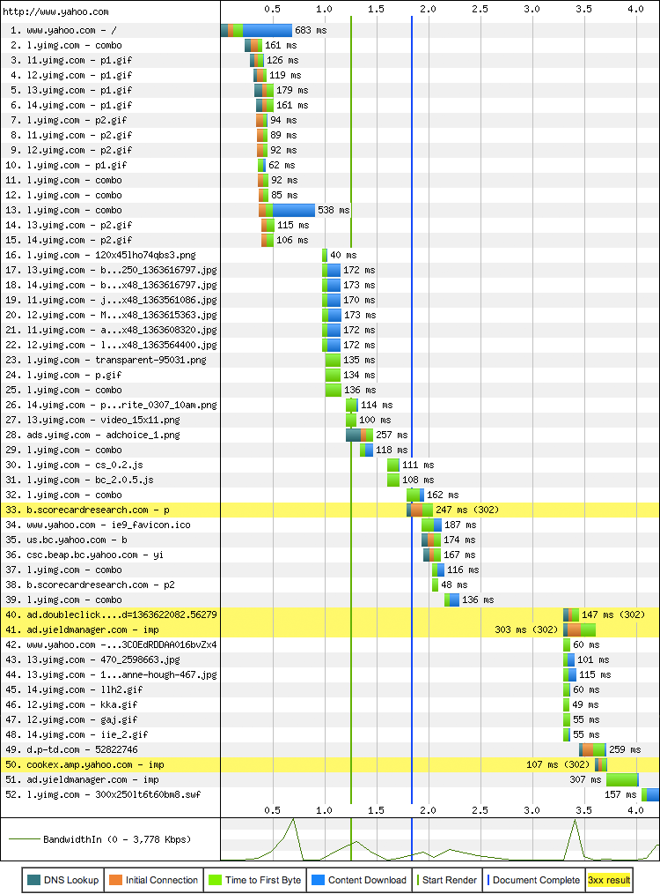Understanding the HTTP request
Stages
- DNS resolution
- TCP connection handshake
- TLS negotiation (if required)
- dispatch the HTTP request
- content download
Performance matters
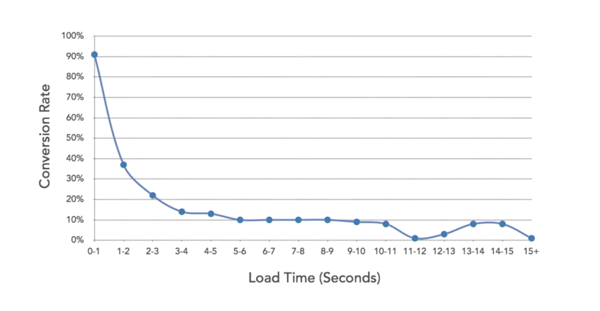Our sites are huge
By 2016, the average size of a website is 2.4MB. 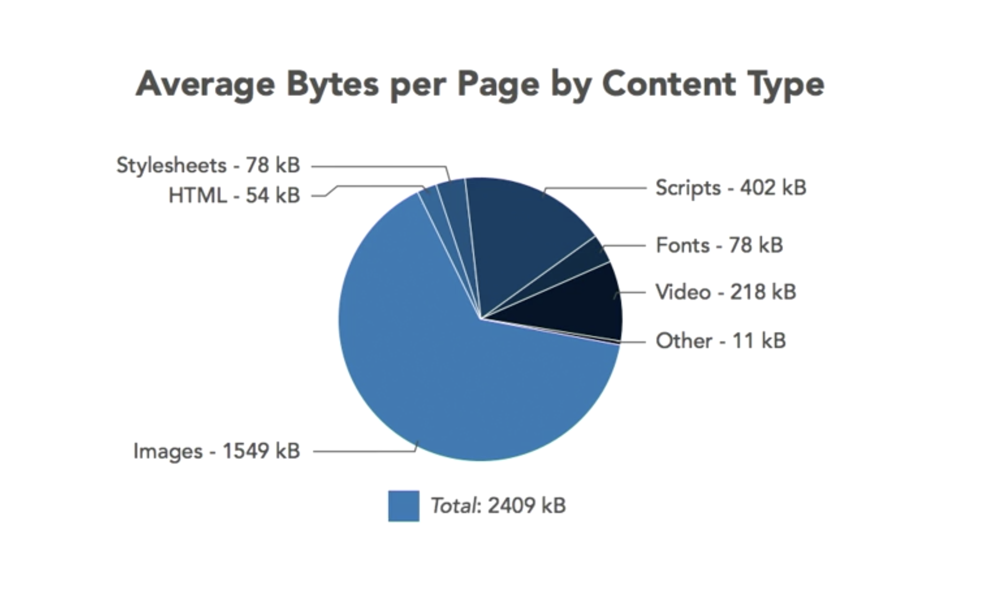If you are pushing 2.4MB x 1 x 1000 = 2.4GB
If you are pushing 2.4MB x 4 x 1000 = 9.6GB
- Bandwidth can get expensive, so poorly performant sites can get very costly.
- Search engine rank and weigh sites based on their mobile performance.
Current workarounds to overcome latency pains
- Following standards and using native browser CSS.
- Serving Critical CSS and JS first (above the fold).
- Spriting: combining and compressing images into one file.
- Inlining: embedding files with data uri.
- Concatenation: merging all your js/css assets.
- Sharding: serving assets on as many different hosts as possible. TCP connections MAX=2.
- Pipelining: sending another request while waiting for the response to a previous request.
Wouldn't it be nice if:
- Be less latency sensitive.
- Fix pipelining and the head of line blocking problem.
- Eliminate the need to keep increasing the number of connections to each host.
- Keep all existing interfaces, all content, the URI formats and schemes.
HTTP/2 to the rescue
HTTP/2 Support
Currently ~79.42% browser support
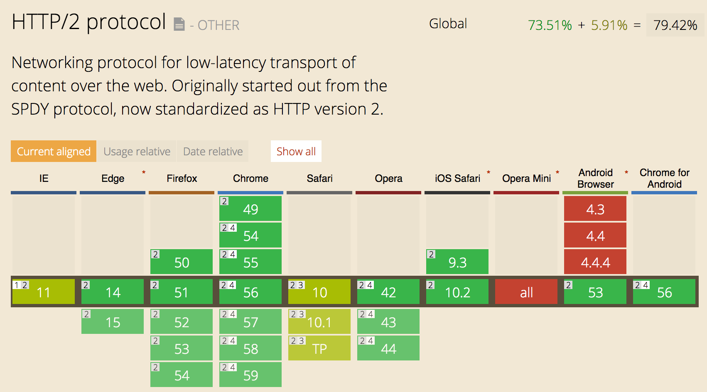- Started from SPDY, protocol spearheaded by Google.
- HTTP/2 is a binary protocol making it simpler.
- HTTP/2 is https:// only (Respect users' privacy and higher success rate)
- Multiplexing: A single http2 connection can contain multiple concurrently-open streams, with either endpoint interleaving frames from multiple streams.
- HTTP/2 offers Server Push or "cache push." If you the client asks for resource X, the server may know they want Z and sends it without being asked.
Multiplexing
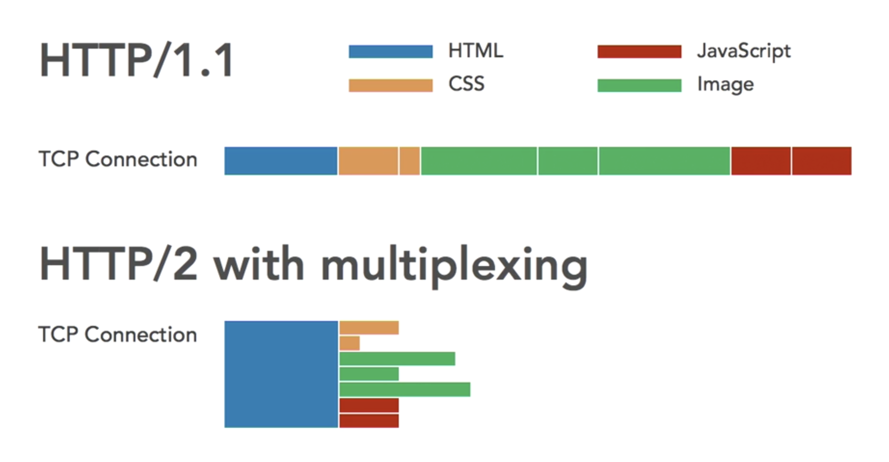HTTP/2 Requirements
- Server support for HTTP/2 + all features
- Encrypted HTTPS connection through SSL
- SSL Certificates are available for free from vendors like OpenSSL and Lets Encrypt.
- Browser Support for HTTP/2
Optimizing for HTTP/2
- Compress images.
- Modularize minified CSS and Javascript in smaller files.
- Cache CSS and Javascript that is unlikely to change.
- User server push to provide the browser with required files before it knows it needs them.
Moving towards performance
How do we do this?
IMAGES SUCK!
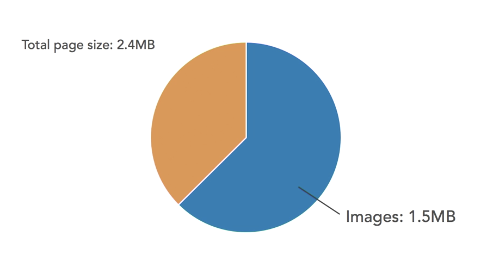Image Performance
- When it comes to images on the web, less is more.
- Stay away from sliders/carousel unless they are absolutely positively integral to the user experience (which is never).
- Manually Optimize your images: Blur unnecessary areas, export with low compression
- Use responsive images that are sized to the viewing area.
- Automate Image Optimization
Choose the right Image format
- Giff: Never use it
- JPEG: lossy, progressively loads, low file size, universal support, does not scale.
- PNG- alpha transparency
- SVG- Not image bitmaps, code-base. Fastest.
- Webp- google format with transparency, better but not widely supported
Code Optimization
Modularize CSS
Completely rethink your CSS. So this:
@import 'CSS/header';
@import 'CSS/menu';
@import 'CSS/frontpage';
@import 'CSS/promo';
@import 'CSS/stories';
@import 'CSS/footer';
@import 'CSS/flexslider';
Becomes this:
Defer CSS
In Javascript we use defer/async, but how do you do it CSS. Javascript to the rescue. 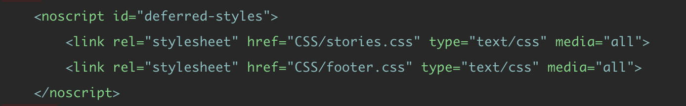
Bleeding edge CSS loading
The future of loading CSS by Jake Archibald
…
…
…
…
Optimizing JS
- JS still belongs at the bottom of the page.
- Appending the Async attribute allows the browser to keep parsing the html, but you don't have control when the scripts start executing.
- Defer completely delays the execution of the javascript until the html is fully parsed. Execution is from top down.
Regular Js is render blocking.
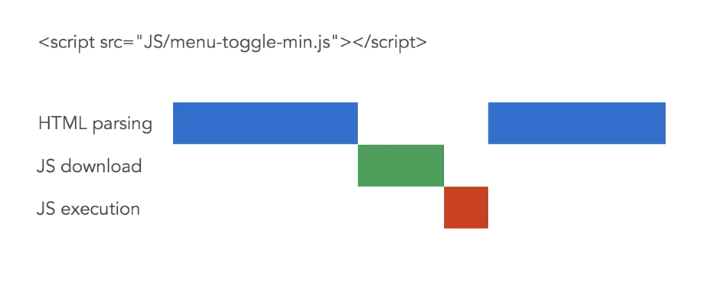Async stops blocking.
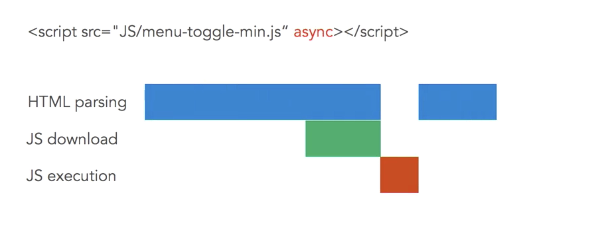Defers delays execution.
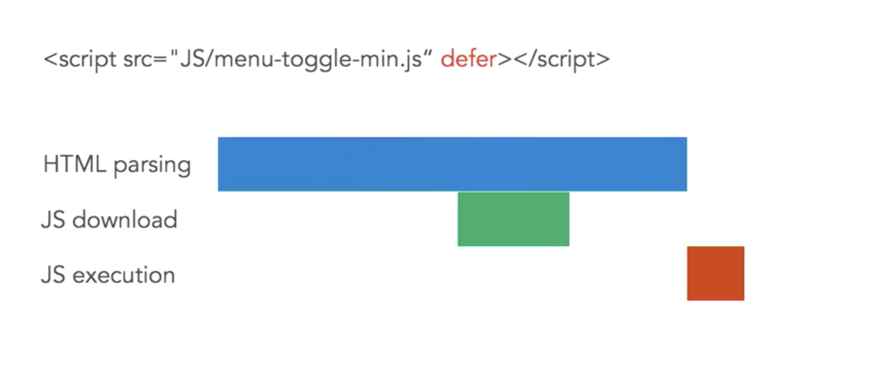Rule of thumb
Pretty much async all javascript unless you need control of execution
Performance testing
These all give different reports. Test against all.- Google Page Speed: Detailed info on how to improve your site.
- Wep Page Test: In depth statistics on your site. Film strip view option.
- Pingdom
- GTMetrix
Server Optimizations
- Enable server-side GZIP
- Enable selective browser caching
- Use command line tools for automated cache busting
- Leverage the potential of HTTP/2 with server push
GZIP
- Managed Hosting: user CPanel
- Wordpress + Drupal have plugins and modules for this
- Manually configure your server settings use HTML5 server configs
Browser Caching
In .htaccess. Experiment with settings. 1 month? up to you.
# Cache all the things:
# One year for most static assets
Header set Cache-Control "max-age=31536000, public"
# One month for images
Header set Cache-Control "max-age=2628000, public"
Cache busting
Server Push
Added header rel=preload
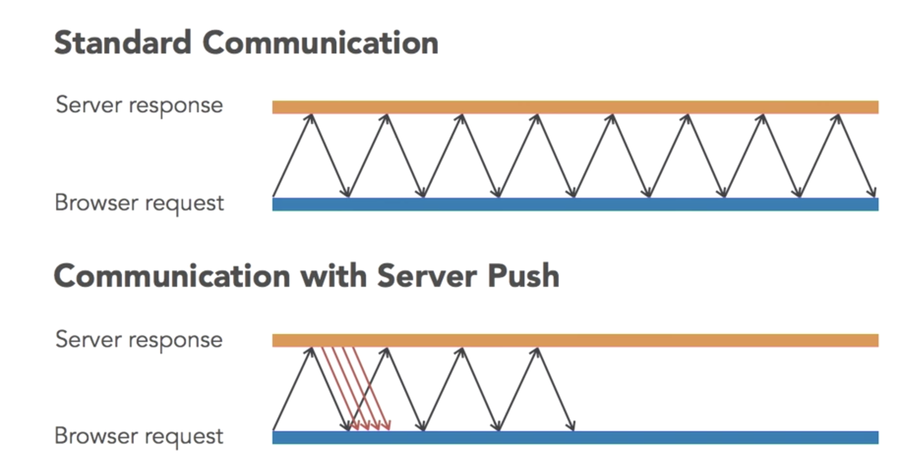You can use server side code
Example with PHP
header('Link: ' . $uri . '; rel=preload; as=' . $as, false);
}
$assets = array(
'' => 'style',
'' => 'style',
'/CSS/header.css' => 'style',
'' => 'script',
'' => 'script',
''=> 'image'
);
array_walk( $assets, push_to_browser);
Server Push Strategy
- Push above the fold assets ( CSS, JS, images, etc)
- Push external assets (font libraries, JS libraries, etc)
- Push "next step" pages (if you are certain the visitor will go to this next page)
Use a Content Delivery Network (CDN)
- HTTPS + HTTP/2 support (with server push)
- Global Reach
- Security Features (firewall, DDoS protections, etc)
- Dismiss Hosting company CDNs, use a 3rd party CDN service that are dedicated CDNs.
Links
- The actual http2 specification in a HTMLified version.
- The http2 web site and perhaps in particular the FAQ.
- Ilya Grigorik's HTTP/2 chapter in his book “High Performance Browser Networking”.
- Getting Ready For HTTP/2: A Guide For Web Designers And Developers.
- Considering How We Use HTTP/2.
- Using HTTP/2 Responsibly: Adapting for Users.